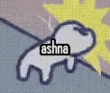

check out these cool websites by my epic friends!!!



im also in a webring!
check out these cool websites by my epic friends!!!
im also in a webring!
hi im shitty kickflips i make music and art and youtube videos and writing and stuff. i post all my creations n shit here. if u wanna learn more about me as a person check this blogpost out to see what im all about.
11/12/23: new blogpost out yall! this piece is incredibly important to me, and if you read just one of my blogposts PLEASE make it this one
11/2/23: good freaking morning kickflip fans i have art for you!!! first off, go check out my band's website!!! it looks very similar to this site because i also made that site :) theres cool art there too! our first live show is saturday and i'm SO excited!!! speaking of live shows, i had my first solo show as everything sucks forever last sunday! i WILL be posting the video to youtube, just need to get that footage edited. and hey, speaking of videos (im so good at this tanget thing) new video about sinkdog and fountain and fountain ii. super super super proud of this one, im always trying to find my mojo with youtube and this one hit it out of the park imo. also im updating furry freakposting to add some newer art and much needed sources for a few older pieces. wow thats so much! i hope you enjoy deeply :)
10/17/23: WE GOT UPDATES BITCHHHHH!!! first off: RIP to bandcamp my beloved :( i'll keep uploading my music to that site until i cant but its very sad that its on its final legs. on the plus side: i have an archive of ALL of the music ive ever made on google drive, will soon post more mirrors. this archive has some rare tracks and projects too so go check it out ;) new project out by 🎉DJ MCDONALDS HASHBROWN🎉: ZODIAC. this album fucking owns im not gonna ngl lie. finally, my band snakeworld! has our first show on november 4th! dm me on discord or email me if ur in the twin cities area, id love to see people there <3
9/18/23: updated site layout again, hopefully giving off more welcoming vibes :3 NEW EVERYTHING SUCKS FOREVER EP OUT NOW!!!!! i worked REALLY hard on these tracks! i hope you all enjoy them <3
9/14/23: added another friend's site to the left! new art added as well. currently making plans for my first live show, details soon to follow! i'm planning to end 2023 with a lot of really cool art, i prommy (different way of saying promise)
8/30/23: new links to other cool sites added! check it out to the left :3 TONS of new art added :o also, new section of the site: furry freakposting. ive dumped basically all the fursona art ive ever received, and plan to continue doing so as i collect more. go check it out if you love my silly dog
8/14/23: im back in america everyone! i left for a vacation which is why i didn't post very much art for a bit. but i'm catching up! NEW WEBSITE LAYOUT!!!!!! hope everyone likes it :3 and we got a new blogpost out, would love to keep writing short form in the future, it's just a manner of balencing it all. as always, i have new youtube videos out. i'm kinda proud of how high my output has been! i have a lot of things i want to say and youtube has been an incredible method of getting those ideas into the world. got a few new art pieces up as well.
7/7/23: we back in business baby!!! lets get up to speed: new art posted on the art tab, a few new songs, and many, many new videos! *probably* gonna overhaul the site pretty soon to make it a lil more pleasing to look at, im kinda over this aesthetic right now lol
5/14/23: holy moly we got weekly updates! we got a bunch of new art posted! ive had so much fun with the gifs lately, expect more of that stuff. i added a guestbook (as you can see above) so please leave a message! i love seeing things strangers think about me and my art :3 also! ill be joining a niche webring with a friend of mine i met recently. were hammering out ideas still, but id love to figure this out and get it set up in a few days! i think webrings are fucking cool! kk, see yall soon with more shitttt
5/9/23: hello everyone! today i have a bunch of stuff to drop again! new single by ESF out! its about the many terrible awful men ive met at house shows. fuck these guys! i also have a new youtube video out! this one is very fun, i wanted to talk about final fantasy iii and i put more time than i normally do into editing it. new piece on the art page. also! "whatever man" is on more or less indefinite hiatus lmao. i know i literally got 1 chapter in, but im the kind of person that struggles to make longform art. im very spur of the moment and impulsive with my art, and writing a whole story takes a lot of time! also, ive been tossing the idea around in my head to post more than just my own stuff on this site. i would love to put other people's music and art here too. check out my contact page and let me know if you want anything to be posted here, i think it could be really fun to post a bunch of art i like and make it sort of curated. speaking of collaborative art, i actually thought of doing a zine the other day! but i have no idea how to even start to organize that, so maybe ill keep that idea swimming in my head for a little longer. but if you have any interest, hit me up on the contact page! ok, that should be all. see yall soon :)
5/1/23: sorry for lack of updates! i got this Thing where if i'm late on something i avoid all stimulus that reminds me of it. so i tend to neglect many things in my life! lots of things to talk about though. for starters, new everything sucks forever ep is out! been making lots of youtube videos lately as well, that blogpost i was gonna make about the creation of the album "everything sucks (forever)" turned into this video here. ive updated the art section of the site as well, i feel like ive been making lots of cool self indulgent fursona art lately. new blogpost about identity out now as well. that *should* be everything. back soon with more things!
3/17/23: NEW ALBUM BY EVERYTHING SUCKS FOREVER OUT NOW!!! GO LISTEN TO MY ALBUM I WORKED VERY HARD ON IT!!! will be posting a blogpost about the creation of the album this weekend :3
3/8/23: new youtube video about art out now!
3/5/23: i am not dead! i lost a lil confidence in my album after i relistened a few times, so i'm gonna polish it a some more before release. plus, i got really excited and
started a brand new project this past week! i'm writing an online novella(?) [is that what this would be?] about a group of 3 trans women struggling to make human connections with each other.
it's titled "Whatever Man." i added a tab for it on this site here under "whatever man". the first chapter has been posted,
and the character bios are available as well. i would love to update frequently but this is just a passion project, no clue how fast i can write lmao.
2/28/23: OOPS album delayed until probably THIS weekend, i have to rerecord a couple verses. heres a lil ep i made with my bandmate while you wait
2/23/23: would ya look at that! i got proper hosting now :D feels good to graduate from neocities. ill be hosting all my music here (as well as bandcamp) as soon as i get more time to work on it. i spent like a billion hours just trying to get this hosting thing going lmao
2/22/23: uh album out this weekend probably. heres a lil cover while you wait i guess
2/20/23: cleaned up the site a lil more, revamped the art section so it doesnt look terrible, and added a contact page. i was also trying to learn how to do a mail list but holy shit that is hard lmao anyways im working on lots of new music so look forward to an album pretty soon
2/11/23: new blogpost out. might figure out how to do an email list soon or something so i can notify people when the site updates lmao. also, i made the mobile version of the site less ass to use. its still pretty sloppy but its readable now as opposed to before
2/5/23: new cover lol
1/20/23: new blogpost out now. gonna keep doing this semi journal semi anecdote thing cause it helps me sort my thoughts better
1/17/23: site revamp: added a navigation bar and generally made site usage far less clunky. added a seperate page for music so i can post recent tracks there and stuff. ideally, ill try to join/make some kind of webring sometime soon so people actually visit this site lolllll. anywayzzzz, new song by everything sucks forever out now